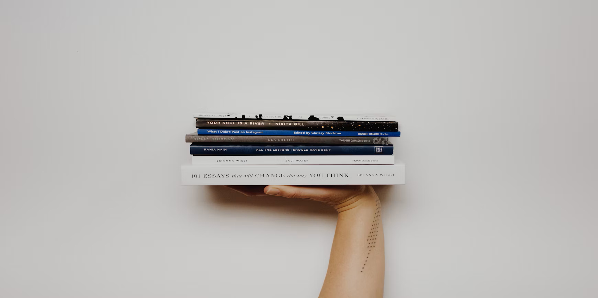

Our Reading Gallery
Every great story begins with curiosity. Explore our gallery of books, reading inspiration, and the joy of discovering your next unexpected favorite.

A Little Reading Inspiration
Listen to our short introduction to Blind Date with a Book and discover the fun of choosing a story without judging it by its cover.
Media Sources
"A stack of books" by Laura Ohlman , via Unsplash. Used under the Unsplash License.
"Stack of books on white surface" by Priscilla Du Preez , via Unsplash. Used under the Unsplash License.
"An open book sitting on top of a stack of books" by Shubham Dhage , via Unsplash. Used under the Unsplash License.
"Person holding pile of books" by Thought Catalog , via Unsplash. Used under the Unsplash License.
Audio introduction recorded by the site creator specifically for this project. Original recording; no third-party audio used.